The Source Window
The Source Window is the primary interface between the user and
the debugger; it is automatically opened when the debugger starts. The
Source Window displays the status of the program, controls execution of
the program, and allows visualization of the program execution.
Menus
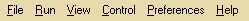
File Menu
- Open
- Opens a file selection dialog to select the executable to debug
- Target Settings...
- Opens the Target Selection Dialog to edit target
settings
- Page Setup
- (Windows only) Opens the Windows Page Setup dialog to configure printing
- Print
- (Windows only) Print the contents of the Source Window Display
- Exit
- Exits the debugger
Run Menu
- Download
- Initiates download of the executable onto the target via the protocol specified
in the Target Selection Dialog
- Run
- Runs or re-runs the program
View Menu
- Stack
- Open a Stack Window
- Registers
- Open a Register Window
- Memory
- Open a Memory Window
- Watch Expressions
- Open a Watch Window
- Local Variables
- Open a Locals Window
- Breakpoints
- Open a Breakpoint Window
- Console
- Open a Console Window
- Function Browser
- Open a window allowing the user to easily search for functions and
set breakpoints.
- Thread List
- Open a window that displays all current threads and allows the user
to change active threads
Control Menu
- Step
- Step program until it reaches a different source line
- Next
- Step program, proceeding through subroutine calls
- Finish
- Execute until the current stack frame returns
- Continue
- Continue program being debugged, after signal or breakpoint
- Step Asm Inst
- Step one instruction exactly
- Next Asm Inst
- Step one instruction, but proceed through subroutine calls
- Automatic Step
- Automatically step the program every two seconds
Preferences Menu
- Global
- Opens the Global Preferences Dialog and allows
editing of global settings
- Source
- Opens the Source Preferences Dialog and allows
editing of Source Window settings
Toolbar
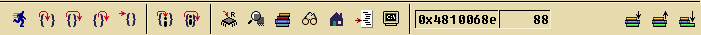
The Source Window toolbar consists of three functional sections: execution
control buttons, debugger window buttons, and stack frame control buttons.
Execution Control Buttons
These convenience buttons provide on-screen access to the most important
debugger execution control functions:
- or
Run
- The Run Button will start execution of the program, including target selection
and downloading, if necessary. If the program is already running, the Run
Button will start the program from the beginning (re-run it).
- or
Stop
- The Stop Button will interrupt execution of the program (provided this
feature is supported by the underlying debugging protocol and hardware)
or cancel downloads. It is also used as an indication that the debugger
is busy.
- or 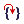Step
- Step the program until it reaches a different source line
- or Next
- Step the program, proceeding through subroutine calls
- or 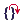 Finish
- Execute until the current stack frame returns
- or Continue
- Continue the program being debugged, after signal or breakpoint
- or 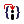 Step Asm Inst
- Step one instruction exactly. This function is only available when the
Source Window is displaying assembler code.
- or Next Asm Inst
- Step one instruction, but proceed through subroutine calls. This function
is only available when the Source Window is displaying assembler code.
Window Buttons
The Debugger Window buttons give instant access to the Debugger's auxiliary
windows:
- or 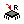 Registers
- Open a Register Window
- or
 Memory
Memory
- Open a Memory Window
 or Stack
or Stack- Open a Stack Window
 or Watch Expressions
or Watch Expressions- Open a Watch Window
- or
 Local Variables
Local Variables
- Open a Locals Window
 or 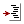 Breakpoints
or 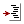 Breakpoints- Open a Breakpoint Window
 or 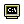 Console
or 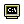 Console- Open a Console Window
Frame Control
The Frame Control area of the toolbar displays information about the PC
of the current frame, and the frame control buttons may be used to navigate
through the call stack. Whenever any of these buttons are used, both the
Source Window Display and the Stack Window will
show the selected frame.
- 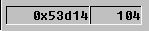 Frame Information Display
- The left half of the frame information display shows the value of the PC
in the current frame. The right half shows the line number of the PC in
the source file, if available.
- or
 Up
Up
- Select and view the stack frame that called this one
- or Down
- Select and view the stack frame called by this one
 or Bottom
or Bottom- Select and view the bottom-most stack frame
Source Display
The Source Display is used for many things: browsing source code, setting
and clearing breakpoints, and a few other special functions. Executable
lines (those for which executable code was generated by the compiler) are
denoted with a marker (a dash, "-") in the first column of the display.
The debugger highlights the PC in the current frame in either green,
indicating that the PC is in the bottom-most frame (i.e., it is being executed)
or gold, indicating that the PC is contained in a frame that is not currently
executing (because it has called another function). A blue highlight is
used by the debugger to indicate a browsing position: the PC is contained
in a frame that is not executing or on the call stack. All highlight colors
are user selectable in the Source Preferences.
Setting a Breakpoint
Moving the mouse pointer over the "hot spot" of an executable line will
change the mouse cursor to a large dot. Clicking the left mouse button
will then toggle a breakpoint at this line. If no breakpoint exists, one
will be installed and the dash in the left margin will change into a red
breakdot. If a breakpoint exists, it will be removed and the red breakdot
will revert back to a dash. The executable line marker shows the status
of each line: an empty marker (the dash) indicates that no breakpoints
are set at the line. A colored breakdot indicates that a breakpoint exists
at the line (see Source Pop-up Menus for more
information on setting different types of breakpoints and their representations
in the Source Display).
Black breakdots in the Source Window display indicate that the breakpoint
has been disabled. To re-enable the breakpoint, click the enable/disable
checkbox in the Breakpoint Window (see
Enabling/Disabling Breakpoints).
Viewing Breakpoints
You can find out more information about a breakpoint by moving the cursor
over a breakpoint. A balloon window will pop up with additional information.
To get a list of all the active breakpoints, you will need to open a
breakpoint window.
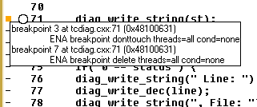
Variable Balloons
If the program to be debugged has started and is stopped, the display
will show the value of variables in variable
balloons. To activate a variable balloon, simply hold the mouse cursor
over the name of a variable in the Source Display for a second or two:
the debugger displays the name of the variable, its type, and its value
in a pop-up balloon.
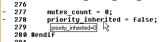
Source Pop-up Menus
The Source Display has two pop-up menus. One is activated by clicking the
right mouse button when the mouse cursor is over an executable line marker's
hot spot. This pop-up menu looks like this:
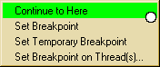
- Continue to Here
- Continue program execution until it reaches this point. All breakpoints
will be ignored. Be aware that if the program never executes the line you selected,
it will run until completion.
- Set Breakpoint
- Set a breakpoint at this line. This has the same effect as left clicking
on this line. Breakpoints are shown as red breakdots in the Source Window
Display.
- Set Temporary Breakpoint
- Set a temporary breakpoint at this line. Temporary breakpoints are shown
as orange breakdots in the Source Window Display. The remove themselves automatically
the first time they are hit.
- Set Breakpoint on Thread(s)...
- GDB allows the user to set a breakpoint on a particular thread or threads. This
menu item will display a dialog with a list of threads. The user can select a list
of threads that will have breakpoints set at the selected line number. A warning
will be displayed if there are no active threads.
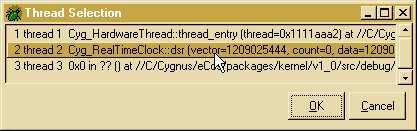
The other pop-up menu is activated by clicking the right mouse button anywhere
else in the Source Display. It is only available when a variable or number
in the display lies below the mouse cursor or is selected (by clicking
the left mouse button and dragging the mouse to highlight the variable/number).
The pop-up menu looks like this:
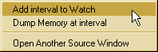
- Add expr to Watch
- Adds the selected expression to the Watch Window,
opening it, if necessary.
- Dump Memory at expr
- Opens a new Memory Window at the selected expression.
If the expression is a variable, then the Memory Window is opened with
memory addresses starting at the value of the variable.
- Open Another SOurce Window
- GDB allows multiple source windows to co-exist. You can, for example, have
one window in source mode and one in assembly mode. Or you can use one window
to browse the stack or other files.
Source Window Status Bars
The Source Window has two status bars which inform the user of the status
of the program (the "status bar") and the status of the Source Window.
The Program Status Bar (or simply "Status
Bar") displays the status of the program. Common messages seen here include:
- No program loaded.
- No program has been loaded into target memory.
- Program is ready to run.
- A program has been loaded into target memory and may be executed. Start
the program by hitting Run.
- Program stopped at line/address
- The program stopped at line line or address address. Execution
may continue by hitting any of the execution control
buttons on the toolbar.
- Program terminated. 'Run' will restart.
- The program exited. Pressing Run will restart
it.
The Status Bar also displays some help information. For instance, the Status
Bar will show the function of a button on the toolbar or the Source Display
Status Bar as well as any keyboard shortcut for any button in the Source
Window.
Source Display Status Bar
The Source Display Status Bar shows the current state of the Source Window:
the name of the file displayed in the Display, the name of the function
in the Display which contains the PC for the current frame (if any), and
the display mode.
The Source File Selector is a dropdown
menu which contains the names of all the files that were compiled into
the program being debugged.
Normally, the File Selector displays the name of the file currently
being viewed, but any file from the dropdown menu may be selected for browsing.
Simply select the file to view from the available choices (or type it directly
into the File Selector) and the Source Window will load that file into
the Display. To return to the PC of the program, simply press the
Bottom
Frame Control Button.
The Source Function Selector displays
the name of the function containing the Source Window's PC, if one exists,
but it may be used to browse any function in the current file. Simply type
the name of the desired function into the Function Selector or select it
from the dropdown menu. The Source Window's PC is updated to point at this
function. To return to the PC of the program, simply press the
Bottom
Frame Control Button.
The Source Display Mode Selector displays
the viewing mode of the current file/function shown in the Source Window
Display.
The function of the "step" keyboard shortcut will differ depending on
the mode the Source Window Display. "Stepping" in Source Mode (or in the
Source Pane of SRC+ASM Mode) will cause a source-level step. "Stepping"
in Assembly or Mixed Mode (or in the Assembly Pane of the SRC+ASM Mode)
will cause the debugger to step exactly one machine instruction. This also
applies to the shortcut for "next".
The Display Mode Selector may be used to change the view of the current
source file. The available display modes are
- SOURCE
- The contents of the Display are shown as source code. If source code is
not available (either because no debugging information is available or
the source file is not found), the Source Window will temporarily set the Display
Mode to "ASSEMBLY".
- ASSEMBLY
- A disassembly of the target's memory is shown in the Display. Even assembly
source files show a disassembly of target memory; to see the assembly source
code, use the SOURCE mode. Note that the debugger can only display assembly
code on a function-by-function basis. It cannot display all the instructions
generated from a single source file.
- MIXED
- The Display shows source code mixed with the assembler instructions which
were generated for those lines by the compiler for the current function.
Note that the addresses of the assembly lines is not necessarily monotonically
increasing. If the source file associated with the function cannot be found,
the Source Window will revert to ASSEMBLY mode.
- SRC+ASM
- The Source Window Display is divided into two panes: an assembly pane and
a source pane. Breakpoints may be set/cleared in either pane.
Search Entry
The Search Entry facilitates searching for text in the Source Window Display.
Simply enter the text to be found into the Search Entry and press the Enter
key on the keyboard to search forwards in the Source Window Display (hold
down the Shift key to search backwards). If a match is found, it is highlighted
in the Source Window and the Program Status Bar displays information about
where the match was found.
The Search Entry can also jump the Source Window to a specific line.
Enter the line number preceded by an "at" sign (@) into the Search Entry
and press enter. If entered line number is greater than the total number
of lines in the Source Window Display, the Display will jump to the end
of the current file.